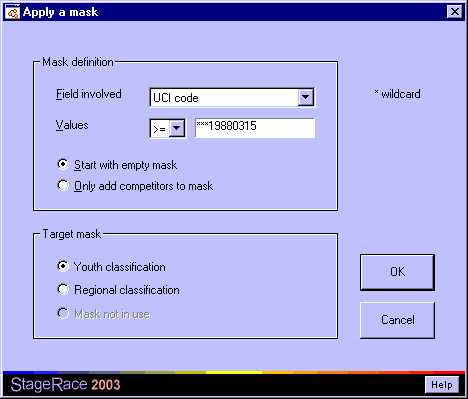

In order to quickly add a certain part of the competitors to a mask, a handy function is added to the Competitors view, which allows for setting criteria to compare competitors to.
The Apply a mask dialog can be opened from within the Competitors view through in the menu. Masks must be configured to have this function enabled in the menu.

A character string can be compared to the contents of one of the fields of a competitor. Therefore you enter the character string and choose with which field it has to be compared.
The type of the comparison can be determined, from the following possibilities:
The choice can be made to start with an empty mask, but also only to add new competitors to the current mask.
The involved mask can be chosen from the activated masks.
The comparing of character strings takes place based on the order of the ASCII standard. If you need more information, we suggest a web search for "extended ascii table" or take your Windows® Character Map (charmap.exe) as a reference.
Start numbers will obviously be compared on numerical value.
An asterisk can be used to ignore corresponding positions in character string and field.
Let's apply a mask specifically for a youth classification, where competitors born on or after March 15th 1988 compete in this youth classification.
For this, make the following choices in the Apply a mask dialog:
Note that the use as in this example is based on having the correct UCI codes entered, in the country-year-month-day format like "USA19740316" or "NED19900120".